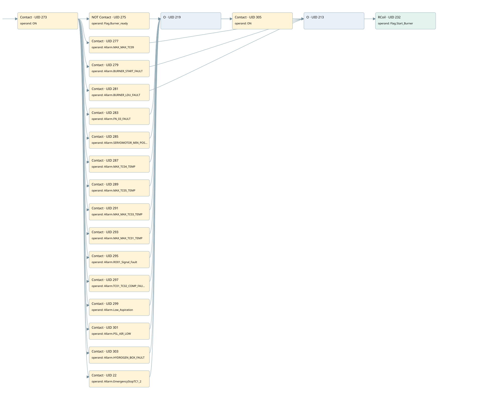

burner stop
burner control · 검색 색인 순서 5 · 원본 내부 NID 추정 5
백업 PLF 원본의 2682087 바이트 위치에서 복원한 XML. 검색 문서 1858의 객체 키 16102200d510000000000000와 연결했다. 이름 해석 19/19개. 남은 RefId는 상수 또는 미해석 참조다.
연결 구조 다시 그리기
원본 Part/PCon/Wire를 이용한 연결도다. TIA 화면의 래더 배치 또는 실행 결과를 재현한 그림은 아니다. 핀 연결은 아래 표와 원본 XML을 기준으로 읽는다. 노드 위에 마우스를 두면 피연산자 이름을 볼 수 있다.

접점·코일·블록과 피연산자
| Part UID | Gate | Negated 핀 | 연결 피연산자 |
|---|---|---|---|
| 273 | Contact | operand = ON | |
| 275 | Contact | operand | operand = Flag.Burner_ready |
| 277 | Contact | operand = Allarm.MAX_MAX_TC09 | |
| 279 | Contact | operand = Allarm.BURNER_START_FAULT | |
| 281 | Contact | operand = Allarm.BURNER_LDU_FAULT | |
| 283 | Contact | operand = Allarm.FN_03_FAULT | |
| 285 | Contact | operand = Allarm.SERVOMOTOR_MIN_POS_ALL | |
| 287 | Contact | operand = Allarm.MAX_TC04_TEMP | |
| 289 | Contact | operand = Allarm.MAX_TC05_TEMP | |
| 291 | Contact | operand = Allarm.MAX_MAX_TC03_TEMP | |
| 293 | Contact | operand = Allarm.MAX_MAX_TC01_TEMP | |
| 295 | Contact | operand = Allarm.RO01_Signal_Fault | |
| 297 | Contact | operand = Allarm.TC01_TC02_COMP_FAULT | |
| 299 | Contact | operand = Allarm.Low_Aspiration | |
| 301 | Contact | operand = Allarm.PSL_AIR_LOW | |
| 303 | Contact | operand = Allarm.HYDROGEN_BOX_FAULT | |
| 22 | Contact | operand = Allarm.EmergencyStopTC1_2 | |
| 219 | O | ||
| 305 | Contact | operand = ON | |
| 213 | O | ||
| 232 | RCoil | operand = Flag.Start_Burner |
접점 경로를 펼친 조건식
Contact·O/A·비교기의 원본 연결을 읽기 쉽게 펼친 보조 해석이다. POWER는 전원 레일 시작을 뜻한다. 호출 블록·에지·타이머의 내부 동작과 다중 쓰기 순서는 이 표로 실행 검증하지 않았다. 미해석 핀과 RefId는 원문 연결표에서 확인한다.
| UID | 동작 | 대상 | 원본 접점 경로 | 내용 |
|---|---|---|---|---|
| 232 | RCoil | Flag.Start_Burner | ((ON AND NOT [Flag.Burner_ready]) OR (ON AND Allarm.MAX_MAX_TC09) OR (ON AND Allarm.BURNER_START_FAULT) OR (ON AND Allarm.BURNER_LDU_FAULT) OR (((ON AND Allarm.FN_03_FAULT) OR (ON AND Allarm.PSL_AIR_LOW) OR (ON AND Allarm.HYDROGEN_BOX_FAULT) OR (ON AND Allarm.EmergencyStopTC1_2) OR (ON AND Allarm.SERVOMOTOR_MIN_POS_ALL) OR (ON AND Allarm.MAX_TC04_TEMP) OR (ON AND Allarm.MAX_TC05_TEMP) OR (ON AND Allarm.MAX_MAX_TC03_TEMP) OR (ON AND Allarm.MAX_MAX_TC01_TEMP) OR (ON AND Allarm.RO01_Signal_Fault) OR (ON AND Allarm.TC01_TC02_COMP_FAULT) OR (ON AND Allarm.Low_Aspiration)) AND ON)) | 조건 성립 시 Reset |
원본 배선 연결
| Wire UID | 동일 Wire 연결 끝점 |
|---|---|
| 307 | Powerrail {} ↔ Part 273.in |
| 251 | ORef 233 (ON) ↔ Part 273.operand |
| 274 | Part 273.out ↔ Part 275.in ↔ Part 277.in ↔ Part 279.in ↔ Part 281.in ↔ Part 283.in ↔ Part 285.in ↔ Part 287.in ↔ Part 289.in ↔ Part 291.in ↔ Part 293.in ↔ Part 295.in ↔ Part 297.in ↔ Part 299.in ↔ Part 301.in ↔ Part 303.in ↔ Part 22.in |
| 252 | ORef 234 (Flag.Burner_ready) ↔ Part 275.operand |
| 276 | Part 275.out ↔ Part 213.in1 |
| 253 | ORef 235 (Allarm.MAX_MAX_TC09) ↔ Part 277.operand |
| 278 | Part 277.out ↔ Part 213.in2 |
| 254 | ORef 236 (Allarm.BURNER_START_FAULT) ↔ Part 279.operand |
| 280 | Part 279.out ↔ Part 213.in3 |
| 255 | ORef 237 (Allarm.BURNER_LDU_FAULT) ↔ Part 281.operand |
| 282 | Part 281.out ↔ Part 213.in4 |
| 256 | ORef 238 (Allarm.FN_03_FAULT) ↔ Part 283.operand |
| 284 | Part 283.out ↔ Part 219.in1 |
| 257 | ORef 239 (Allarm.SERVOMOTOR_MIN_POS_ALL) ↔ Part 285.operand |
| 286 | Part 285.out ↔ Part 219.in2 |
| 258 | ORef 240 (Allarm.MAX_TC04_TEMP) ↔ Part 287.operand |
| 288 | Part 287.out ↔ Part 219.in3 |
| 259 | ORef 241 (Allarm.MAX_TC05_TEMP) ↔ Part 289.operand |
| 290 | Part 289.out ↔ Part 219.in4 |
| 260 | ORef 242 (Allarm.MAX_MAX_TC03_TEMP) ↔ Part 291.operand |
| 292 | Part 291.out ↔ Part 219.in5 |
| 261 | ORef 243 (Allarm.MAX_MAX_TC01_TEMP) ↔ Part 293.operand |
| 294 | Part 293.out ↔ Part 219.in6 |
| 262 | ORef 244 (Allarm.RO01_Signal_Fault) ↔ Part 295.operand |
| 296 | Part 295.out ↔ Part 219.in7 |
| 263 | ORef 245 (Allarm.TC01_TC02_COMP_FAULT) ↔ Part 297.operand |
| 298 | Part 297.out ↔ Part 219.in8 |
| 264 | ORef 246 (Allarm.Low_Aspiration) ↔ Part 299.operand |
| 300 | Part 299.out ↔ Part 219.in9 |
| 265 | ORef 247 (Allarm.PSL_AIR_LOW) ↔ Part 301.operand |
| 302 | Part 301.out ↔ Part 219.in10 |
| 266 | ORef 248 (Allarm.HYDROGEN_BOX_FAULT) ↔ Part 303.operand |
| 304 | Part 303.out ↔ Part 219.in11 |
| 21 | ORef 23 (Allarm.EmergencyStopTC1_2) ↔ Part 22.operand |
| 24 | Part 22.out ↔ Part 219.in12 |
| 267 | Part 219.out ↔ Part 305.in |
| 268 | ORef 249 (ON) ↔ Part 305.operand |
| 306 | Part 305.out ↔ Part 213.in5 |
| 270 | Part 213.out ↔ Part 232.in |
| 272 | ORef 250 (Flag.Start_Burner) ↔ Part 232.operand |
식별자 해석 근거 19개
| ORef UID | RefId | 이름 | IdentXmlPart 파일 | 해석 방법 |
|---|---|---|---|---|
| 233 | 1 | ON | 0582-IdentXmlPart.xml | UID/RID + search-text + NID agreement |
| 234 | 34 | Flag.Burner_ready | 0585-IdentXmlPart.xml | UID/RID + search-text + NID agreement |
| 235 | 24 | Allarm.MAX_MAX_TC09 | 0585-IdentXmlPart.xml | UID/RID + search-text + NID agreement |
| 236 | 27 | Allarm.BURNER_START_FAULT | 0585-IdentXmlPart.xml | UID/RID + search-text + NID agreement |
| 237 | 6 | Allarm.BURNER_LDU_FAULT | 0585-IdentXmlPart.xml | UID/RID + search-text + NID agreement |
| 238 | 35 | Allarm.FN_03_FAULT | 0585-IdentXmlPart.xml | UID/RID + search-text + NID agreement |
| 239 | 23 | Allarm.SERVOMOTOR_MIN_POS_ALL | 0585-IdentXmlPart.xml | UID/RID + search-text + NID agreement |
| 240 | 36 | Allarm.MAX_TC04_TEMP | 0585-IdentXmlPart.xml | UID/RID + search-text + NID agreement |
| 241 | 37 | Allarm.MAX_TC05_TEMP | 0585-IdentXmlPart.xml | UID/RID + search-text + NID agreement |
| 242 | 38 | Allarm.MAX_MAX_TC03_TEMP | 0585-IdentXmlPart.xml | UID/RID + search-text + NID agreement |
| 243 | 25 | Allarm.MAX_MAX_TC01_TEMP | 0585-IdentXmlPart.xml | UID/RID + search-text + NID agreement |
| 244 | 39 | Allarm.RO01_Signal_Fault | 0585-IdentXmlPart.xml | UID/RID + search-text + NID agreement |
| 245 | 40 | Allarm.TC01_TC02_COMP_FAULT | 0585-IdentXmlPart.xml | UID/RID + search-text + NID agreement |
| 246 | 41 | Allarm.Low_Aspiration | 0585-IdentXmlPart.xml | UID/RID + search-text + NID agreement |
| 247 | 42 | Allarm.PSL_AIR_LOW | 0585-IdentXmlPart.xml | UID/RID + search-text + NID agreement |
| 248 | 43 | Allarm.HYDROGEN_BOX_FAULT | 0585-IdentXmlPart.xml | UID/RID + search-text + NID agreement |
| 23 | 245 | Allarm.EmergencyStopTC1_2 | 0585-IdentXmlPart.xml | UID/RID + search-text + NID agreement |
| 249 | 1 | ON | 0582-IdentXmlPart.xml | UID/RID + search-text + NID agreement |
| 250 | 19 | Flag.Start_Burner | 0585-IdentXmlPart.xml | UID/RID + search-text + NID agreement |
검색 코드 보조 자료
참조 명칭을 찾기 위한 자료이며 실행 순서나 AND/OR 관계는 위 연결표로 확인한다.
"on" "flag".burner_ready "flag".start_burner "allarm".max_max_tc09 "allarm".burner_start_fault "allarm".burner_ldu_fault "allarm".fn_03_fault "on" "allarm".servomotor_min_pos_all "allarm".max_tc04_temp "allarm".max_tc05_temp "allarm".max_max_tc03_temp "allarm".max_max_tc01_temp "allarm".ro01_signal_fault "allarm".tc01_tc02_comp_fault "allarm".low_aspiration "allarm".psl_air_low "allarm".hydrogen_box_fault "allarm".emergencystoptc1_2